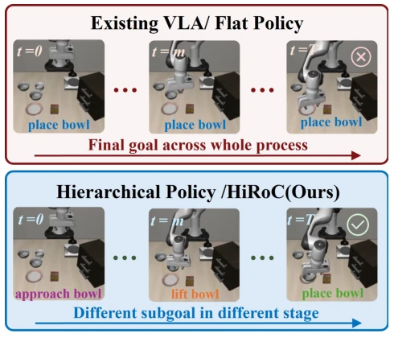
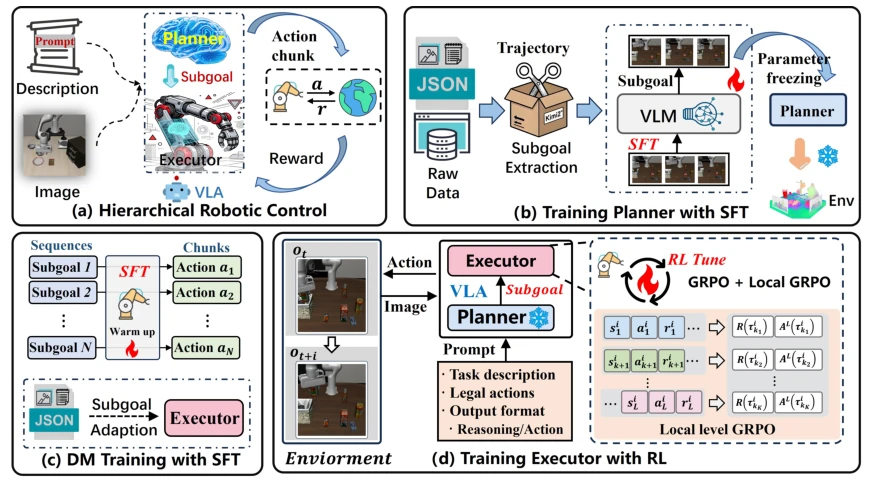
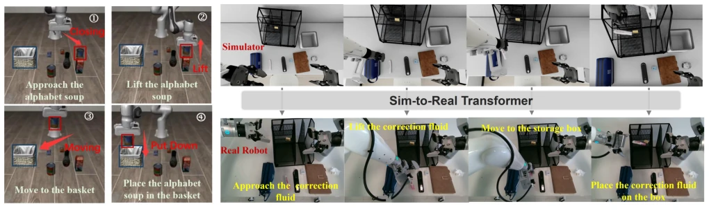

This paper performs a 'hierarchical surgery' on VLA models, splitting the flat policy into 'planning + execution' components. HiRoC indeed proves quite effective, achieving an average improvement of 10% on LIBERO and reaching a 98% success rate on long-horizon tasks, suggesting that 'chopping' is more digestible than 'swallowing raw'. However, the planner is directly frozen during the RL stage, akin to a 'hands-off manager'; should planning errors occur, the executor is compelled to proceed regardless, raising doubts about robustness. Moreover, as framework complexity increases, will inference latency explode? After all, it requires running a large model an additional time for planning. Overall, this is a pragmatic path for VLA post-training, but do not expect it to solve all uncertainties in the physical world. Especially, planning stability in dynamic environments still needs verification, and computational overhead may become a deployment bottleneck.
研究动机Motivation
当前 VLA 模型（Zitkovich et al. 2023; Kim et al. 2024）在短程操作表现优异，但在长程任务中常因“扁平策略”失效。现有后训练方法多直接映射全局指令到动作（Guo et al. 2025b; Lu et al. 2025），缺乏对任务进度的显式建模。虽然已有分层方法（Gao et al. 2025），但多依赖离线监督学习，无法通过在线交互提升执行能力。这导致模型难以处理多阶段任务，微小偏差易累积导致失败，且存在严重的子目标条件执行冷启动问题。因此，亟需一种能显式分解任务进度、且支持在线 RL 优化的分层框架，以解决长程决策中的语义断层与分布错位问题。
Current VLA models (Zitkovich et al. 2023; Kim et al. 2024) perform excellently in short-horizon operations but often fail in long-horizon tasks due to 'flat policies'. Existing post-training methods mostly directly map global instructions to actions (Guo et al. 2025b; Lu et al. 2025), lacking explicit modeling of task progress. Although hierarchical methods exist (Gao et al. 2025), they mostly rely on offline supervised learning and cannot improve execution capabilities through online interaction. This leads to models struggling to handle multi-stage tasks, where minor deviations easily accumulate leading to failure, and there exists a severe cold-start problem for sub-goal conditioned execution. Therefore, there is an urgent need for a hierarchical framework capable of explicitly decomposing task progress and supporting online RL optimization, to address semantic gaps and distribution shifts in long-horizon decision-making.

Figure 1: Motivation of HiRoC. Existing flat VLA policies generate actions conditioned on the same global task instruc- tion throughout execution. HiRoC instead decomposes the global task into sequential subgoal, enabling more effective long-horizon decision-making.
方法Method
HiRoC 框架包含高层规划器与低层执行器。首先，规划器通过 SFT 在整理后的数据上训练，将全局指令分解为可执行子目标。其次，为解决规划器与预训练执行器间的分布错位（DM），执行器先在子目标条件数据上进行 SFT 预热，确保能理解子目标语义。最后，执行器在规划器指导下进行在线 RL 调优，采用分层 GRPO 目标，结合任务级与子目标级优势信号。规划器在 RL 阶段冻结，避免分布漂移。关键创新在于子目标对齐 SFT 和分层优势加权，公式中通过 K 和 L 动态平衡两种信号贡献，其中 K 为平均子目标数，L 为轨迹长度，确保不同任务复杂度下的优势信号权重合理分配，从而提升长程策略的稳定性。
The HiRoC framework comprises a high-level planner and a low-level executor. First, the planner is trained via SFT on curated data to decompose global instructions into executable sub-goals. Second, to address the distribution mismatch (DM) between the planner and the pre-trained executor, the executor is first SFT-warmed on sub-goal conditioned data to ensure it can understand sub-goal semantics. Finally, the executor undergoes online RL tuning under planner guidance, adopting a hierarchical GRPO objective that combines task-level and sub-goal-level advantage signals. The planner is frozen during the RL stage to avoid distribution drift. Key innovations lie in sub-goal alignment SFT and hierarchical advantage weighting; in the formula, K and L dynamically balance the contribution of the two signals, where K is the average number of sub-goals and L is the trajectory length, ensuring reasonable allocation of advantage signal weights under different task complexities, thereby improving the stability of long-horizon policies.

Figure 2: The framework of HiRoC. (a) shows the environmental interaction via our proposed HiRoC. The training process of HiRoC is divided into three parts: (b) train planner by SFT on pre-collected trajectories; (c) pretrain executor with SFT on prepared data to overcome the issue of distribution misalignment (DM); and (d) train executor by RL tuning when interacting with environment.
Tested on the four LIBERO suites and LIBERO-Plus, comparing against 10 baselines including OpenVLA, TGRPO, GRAPE, etc. HiRoC achieves an average success rate of 93.5%, reaching 98% on long-horizon tasks. Ablation studies indicate that removing the planner or DM training both lead to significant performance drops. Sim-to-real experiments were successfully deployed on real robot arms without additional fine-tuning. Results show the hierarchical structure yields the greatest gain for long-horizon tasks, while visual localization tasks see smaller improvements. Overall, this validates the effectiveness of hierarchical post-training and the contribution of each component, proving the key role of sub-goal decomposition in complex operations, and experiments were completed on 8 H200 GPUs, demonstrating engineering feasibility.

Figure 6: The case study. Figure 7: The real world experiment: put correction fluid in box layer 2.